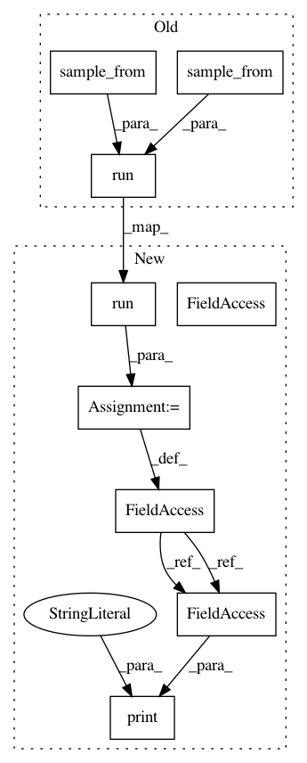

8b3f79f3079834f00c7ec62d5decd6bc026c1bc8,python/ray/tune/examples/tune_mnist_keras.py,,,#,47
Before Change
max_t=400,
grace_period=20)
tune.run(
train_mnist,
name="exp",
scheduler=sched,
stop={
"mean_accuracy": 0.99,
"training_iteration": 5 if args.smoke_test else 300
},
num_samples=10,
resources_per_trial={
"cpu": 2,
"gpu": 0
},
config={
"threads": 2,
"lr": tune.sample_from(lambda spec: np.random.uniform(0.001, 0.1)),
"momentum": tune.sample_from(
lambda spec: np.random.uniform(0.1, 0.9)),
"hidden": tune.sample_from(
lambda spec: np.random.randint(32, 512)),
})
After Change
sched = AsyncHyperBandScheduler(
time_attr="training_iteration", max_t=400, grace_period=20)
analysis = tune.run(
train_mnist,
name="exp",
scheduler=sched,
metric="mean_accuracy",
mode="max",
stop={
"mean_accuracy": 0.99,
"training_iteration": 5 if args.smoke_test else 300
},
num_samples=10,
resources_per_trial={
"cpu": 2,
"gpu": 0
},
config={
"threads": 2,
"lr": tune.uniform(0.001, 0.1),
"momentum": tune.uniform(0.1, 0.9),
"hidden": tune.randint(32, 512),
})
print("Best hyperparameters found were: ", analysis.best_config)
In pattern: SUPERPATTERN
Frequency: 3
Non-data size: 9
Instances
Project Name: ray-project/ray
Commit Name: 8b3f79f3079834f00c7ec62d5decd6bc026c1bc8
Time: 2020-11-14
Author: rliaw@berkeley.edu
File Name: python/ray/tune/examples/tune_mnist_keras.py
Class Name:
Method Name:
Project Name: ray-project/ray
Commit Name: 8b3f79f3079834f00c7ec62d5decd6bc026c1bc8
Time: 2020-11-14
Author: rliaw@berkeley.edu
File Name: python/ray/tune/examples/tune_mnist_keras.py
Class Name:
Method Name:
Project Name: ray-project/ray
Commit Name: 8b3f79f3079834f00c7ec62d5decd6bc026c1bc8
Time: 2020-11-14
Author: rliaw@berkeley.edu
File Name: python/ray/tune/examples/pbt_ppo_example.py
Class Name:
Method Name:
Project Name: ray-project/ray
Commit Name: 8b3f79f3079834f00c7ec62d5decd6bc026c1bc8
Time: 2020-11-14
Author: rliaw@berkeley.edu
File Name: python/ray/tune/examples/tune_cifar10_gluon.py
Class Name:
Method Name: